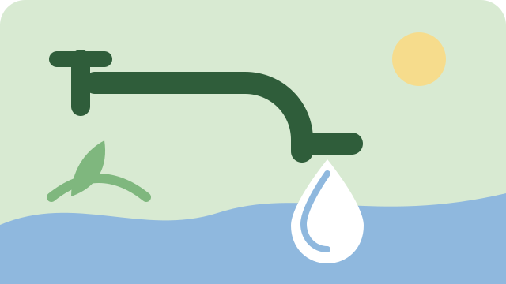
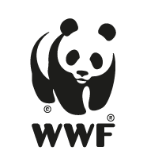
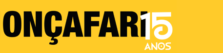

Repensar
Antes de comprar, pergunte: eu realmente preciso disso? Consumo consciente começa na escolha.
Sustentabilidade no dia a dia
Leituras rápidas para mudar hábitos no dia a dia e organizações sérias para apoiar quem cuida do planeta.
Destaques
Comece pelo artigo em destaque do blog e conheça algumas organizações que cuidam do meio ambiente.

Consumo consciente
Atitudes que ajudam a evitar desperdícios e a observar o consumo de água na sua rotina.
Ler artigo: Como cuidar da água no dia a diaMata Atlântica e água
Conservação e restauração da Mata Atlântica, proteção da água e valorização de áreas protegidas.

Conservação global
Conservação e restauração, biodiversidade, justiça socioambiental e mobilização da sociedade.

Fauna e biomas
Conservação da biodiversidade e de espécies como onças-pintadas e lobos-guarás, em diferentes biomas.
Por onde começar
Uma forma fácil de lembrar o que fazer antes de comprar, usar ou descartar qualquer coisa.
Antes de comprar, pergunte: eu realmente preciso disso? Consumo consciente começa na escolha.
Prefira produtos com menos embalagem, a granel ou refis. Menos consumo é menos resíduo.
Potes de vidro, sacolas de pano e garrafas viram itens do dia a dia em vez de lixo.
Separe os materiais corretamente e encaminhe para a coleta seletiva da sua cidade.